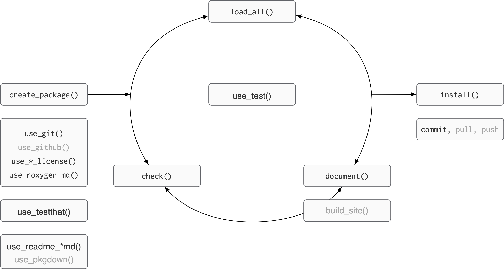
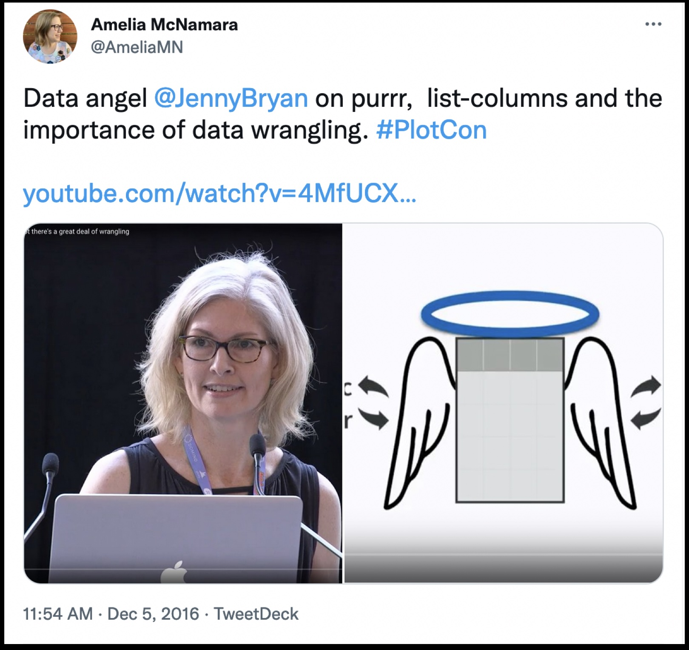

💻 🏦
Code You Can Bank On
Package and function design
Amelia McNamara
Playing the whole game
Figure adapted from Packages, by Hannah Frick
BLT ├── BLT.Rproj ├── DESCRIPTION ├── NAMESPACE ├── R │ ├── AR1.R │ ├── BLT-package.R │ ├── BLT_ggplot_na_distribution.R │ ├── data.R │ ├── perc_missing.R │ └── perc_missing_tidy.R ├── README.Rmd ├── README.md ├── data ├── data │ ├── bacon.rda │ ├── lettuce.rda │ └── tomatoes.rda ├── man │ ├── AR1.Rd │ ├── BLT-package.Rd │ ├── BLT_ggplot_na_distribution.Rd │ ├── bacon.Rd │ ├── figures │ │ └── README-pressure-1.png │ ├── perc_missing.Rd │ └── perc_missing_tidy.Rd ├── tests │ ├── testthat │ ├── testthat │ │ ├── _snaps │ │ │ └── BLT_ggplot_na_distribution │ │ │ ├── tomato-na-dist.new.svg │ │ │ └── tomato-na-dist.svg │ │ ├── test-BLT_ggplot_na_distribution.R │ │ └── test-perc_missing_tidy.R │ └── testthat.R └── vignettes ├── BLT.Rmd └── BLT.html
unchanged
changed
changed by you
Best and good enough
Best practices for scientific computing
Write programs for people, not computers.
- A program should not require its readers to hold more than a handful of facts in memory at once.
- Make names consistent, distinctive, and meaningful.
- Make code style and formatting consistent.
Let the computer do the work.
- Make the computer repeat tasks.
- Save recent commands in a file for re-use.
- Use a build tool to automate workflows.
Make incremental changes.
- Work in small steps with frequent feedback and course correction.
- Use a version control system.
- Put everything that has been created manually in version control.
Don’t repeat yourself (or others).
- Every piece of data must have a single authoritative representation in the system.
- Modularize code rather than copying and pasting.
- Re-use code instead of rewriting it.
Best practices for scientific computing
Plan for mistakes.
- Add assertions to programs to check their operation.
- Use an off-the-shelf unit testing library.
- Turn bugs into test cases.
- Use a symbolic debugger.
Optimize software only after it works correctly.
- Use a profiler to identify bottlenecks.
- Write code in the highest-level language possible.
Document design and purpose, not mechanics.
- Document interfaces and reasons, not implementations.
- Refactor code in preference to explaining how it works.
- Embed the documentation for a piece of software in that software.
Collaborate.
- Use pre-merge code reviews.
- Use pair programming when bringing someone new up to speed and when tackling particularly tricky problems.
- Use an issue tracking tool.
Good enough practices for scientific computing
Data management
- Save the raw data.
- Ensure that raw data are backed up in more than one location.
- Create the data you wish to see in the world.
- Create analysis-friendly data.
- Record all the steps used to process data.
- Anticipate the need to use multiple tables, and use a unique identifier for every record.
- Submit data to a reputable DOI-issuing repository so that others can access and cite it.
Manuscripts
- Write manuscripts using online tools with rich formatting, change tracking, and reference management.
- Write the manuscript in a plain text format that permits version control.
Software
- Place a brief explanatory comment at the start of every program.
- Decompose programs into functions.
- Be ruthless about eliminating duplication.
- Always search for well-maintained software libraries that do what you need.
- Test libraries before relying on them.
- Give functions and variables meaningful names.
- Make dependencies and requirements explicit.
- Do not comment and uncomment sections of code to control a program’s behavior.
- Provide a simple example or test data set.
- Submit code to a reputable DOI-issuing repository.
Good enough practices for scientific computing
Collaboration
- Create an overview of your project.
- Create a shared “to-do” list for the project.
- Decide on communication strategies.
- Make the license explicit.
- Make the project citable.
Project organization
- Put each project in its own directory, which is named after the project.
- Put text documents associated with the project in the doc directory.
- Put raw data and metadata in a data directory and files generated during cleanup and analysis in a results directory.
- Put project source code in the src directory.
- Put external scripts or compiled programs in the bin directory.
- Name all files to reflect their content or function.
Keeping track of changes
- Back up (almost) everything created by a human being as soon as it is created.
- Keep changes small.
- Share changes frequently.
- Create, maintain, and use a checklist for saving and sharing changes to the project.
- Store each project in a folder that is mirrored off the researcher’s working machine.
- Add a file called CHANGELOG.txt to the project’s docs subfolder.
- Copy the entire project whenever a significant change has been made.
- Use a version control system.
“Everything I know is from Jenny Bryan”

rm(list = ls()) -> computer on fire
If the first line of your R script is
setwd("C:\Users\jenny\path\that\only\I\have")I will come into your office and SET YOUR COMPUTER ON FIRE 🔥.
If the first line of your R script is
rm(list = ls())I will come into your office and SET YOUR COMPUTER ON FIRE 🔥.
– Jenny Bryan, Project-oriented workflow
Code styling
Many (most?) people have coalesced around the tidyverse style guide.
You can use the {styler} package to automatically style your code. Once it is installed, you get additional Addins in RStudio.
Style Active File
Style Package (!!)
Let’s try styling our package, and then look at the diff
Commit
Now would be a good time to commit your changes
Jason Long, CC BY 3.0 <https://creativecommons.org/licenses/by/3.0>, via Wikimedia Commons
Naming functions
If writing a smaller package, consider prefixing your functions:
- {BLT}:
BLT_perc_missing()
Use a verb next:
dplyr::mutate(),stringr::str_split()
Use a noun if building up a specific type of object:
ggplot2::ggplot(),ggplot2::geom_point()
Casing
Tidyverse uses
snake_case; Shiny preferscamelCasePython prefers
snake_caseJavaScript prefers:
camelCasefor functionsPascalCasefor classes, interfaces
Pick a convention according to your domain, follow it.
Arguments
Here, mtcars is an argument:
In R, we sometimes use these terms interchangeably; we sometimes use the term formals.
¯\_(ツ)_/¯
Naming arguments
Like naming functions, strive to be:
- consistent
- evocative
- concise
There are only two hard things in Computer Science: cache invalidation and naming things.
– Phil Karlton
And off-by-one errors – Leon Bambrick
Ordering arguments
- data: first argument, “the thing”
- descriptors: values the user should specify
- dots (
...): stuff that gets passed to other functions - details: values with defaults
I have seen the order of dots and details reversed.
However, data and descriptors almost always come first.
Discuss with neighbour
Which are: data, descriptors, details?
Discuss with neighbor (answer)
Which are: data, descriptors, details?
Resources
Object of type ‘closure’ is not subsettable, Jenny Bryan. rstudio::conf video, slides
Code “smells” and feels, Jenny Bryan